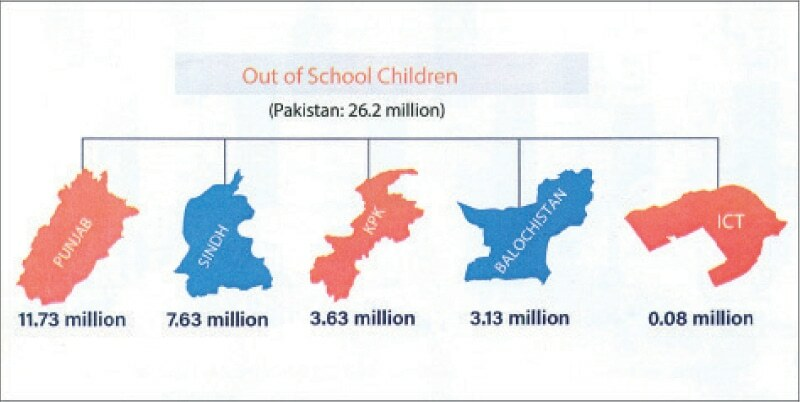

education

ISLAMABAD: A report on the performance of the education sector released by the Pakistan Institute of Education – a subsidiary of the education ministry – has revealed a harrowing state of affairs in the sector, particularly the disparity in the availability of essential facilities – such as toilets, potable water, boundary walls – in different regions of the country.
The Pakistan Education Statistics 2021-22 released on Monday underscored a lack of funds, poor pupil-teacher ratio, missing basic facilities as well as 26 million out-of-school children in the country. The report covered 313,418 education institutions, catering to 54,870,964 students with the support of 2,139,631 educators.
The report said there was a pressing need for strategic planning and sustainable investment in critical sectors, particularly education, to build a resilient and inclusive society.
Stark lack of facilities
As per the report, Punjab, the Islamabad Capital Territory, and Khyber Pakhtunkhwa fared comparatively better in terms of education facilities.
Alarming number of schools across Pakistan lack toilets, potable water among other basic facilities
Balochistan’s education sector faced significant challenges in the education sector. The report said only 23 per cent of primary schools in the province had access to potable water. Azad Jammu Kashmir has 31pc primary schools with access to drinking water, followed by 61pc in Sindh. Gilgit-Baltistan’s 63pc primary schools have potable water.
The situation is not much better in middle schools either; 40pc schools in Balochistan and 52pc schools in AJK only have access to potable water. According to the report, only 59pc of Sindh’s schools, 39pc in Balochistan, 31pc in AJK, and 61pc in GB have a boundary wall.
Electricity availability also shows significant regional discrepancies. While Punjab and ICT have managed to provide electricity to all primary schools, the figures are lower in other provinces and regions: only 15pc in Balochistan, 21pc in AJK, 38pc in Sindh, and 44pc in Gilgit-Baltistan are powered.